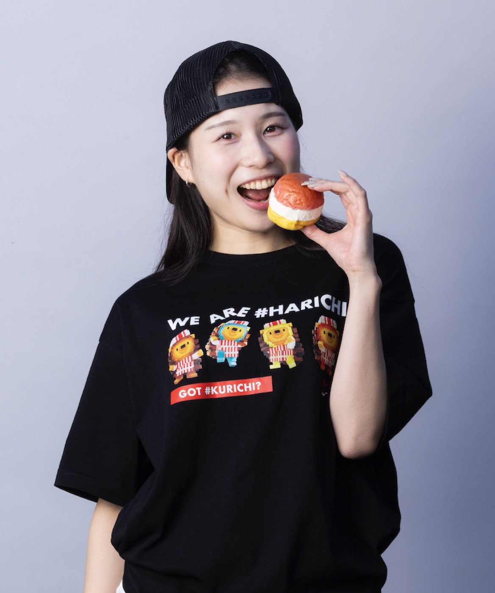

← Blog 一覧へ
GOT #KURICHI? NEW YORK CITY Tシャツ、オンライン発売スタート

WE ARE #HARICHI!
ハリチくん Tシャツ販売スタート！
クリチLANDで働く人気キャラクター、ハリチ君（HARICHI）が ついに "公式アパレル" としてTシャツになりました！
今回のTシャツは、今どきのゆったり感が楽しめる オーバーサイズシルエット（5.6オンス／ユナイテッドアスレ）を採用。 ユニセックスで誰でも着こなしやすく、リラックス感のあるシルエットが魅力です。
LINEUP
■ カラー展開：白 & 黒の2種類
どちらも普段使いしやすく、 キャッチーなハリチ君がしっかり映える万能カラーです。
■ デザインラインナップは全4種類
今回のコレクションでは、ハリチ君の魅力を存分に楽しめる 選りすぐりの4デザインをご用意しました。
① #HARICHI with #KURICHI
ハリチ君＋クリチの最強コンビ。一番人気の"象徴的デザイン"です。
② #HARICHI（Red）
赤いロゴとクラシックなハリチ君が印象的。 コーデの主役になるポップで元気な仕上がり。
③ #HARICHI（Blue）
爽やかなブルーロゴをまとったハリチ君。 少しクールに、ストリート寄りの着こなしも楽しめます。
④ WE ARE #HARICHI
3〜4体のハリチ君が並ぶ、チーム感満載のスペシャルデザイン。 イベントや仲間とのお揃いにもおすすめ！
■ まとめ
ハリチ君の世界観をそのまま着られる、 クリチLAND公式Tシャツの新ラインナップ。
キャラクターの魅力 × トレンドシルエット × 高品質ボディ この3つを掛け合わせた、こだわりのコレクションになりました。
あなたのお気に入りのハリチ君を選んで、 日常に"クリチのワクワク"を取り入れてください！
■ 使用ボディ：［ユナイテッドアスレ］5.6オンス ビッグシルエット
- ほどよい厚みの5.6オンス
- 肩落ちのワイドシルエット
- 耐久性も高く毎日着られる
- 男女問わず使いやすい"今っぽい"形
普段着にもイベントユニフォームにもぴったりの高品質ボディです。